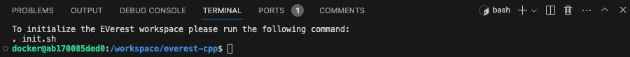
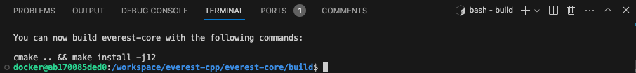
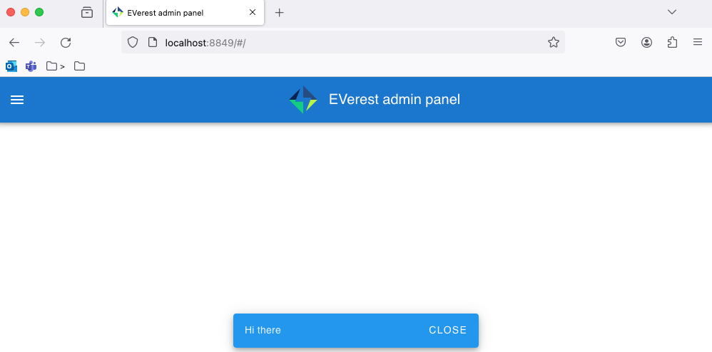

9.4. How To: Develop on a Mac¶
This is a tutorial on how to setup your Mac to develop on EVerest.
9.4.1. Application Setup¶
Install Homebrew
Follow the instructions on the brew.sh.
It may ask you for your password, but don’t worry, that is expected.
Install Docker Desktop
Follow the instructions from Install Docker Desktop on Mac.
Install VSCode
You can either download it from the VSCode website, or from Homebrew:
brew install --cask visual-studio-code
Install VSCode’s Dev Containers Extension
Once you have VSCode up and running, follow the instructions at the Dev Container extension’s page.
9.4.2. GitHub Setup¶
Create an ssh keypair
ssh-keygen -t rsa -a 100 -Z aes128-gcm@openssh.com
Create a file named config in the ~/.ssh folder
touch ~/.ssh/config
Add the following to the file:
AddKeysToAgent yes User git PubkeyAcceptedAlgorithms +ssh-rsa
Checkout the EVerest Utils repository
> git@github.com:EVerest/everest-utils.git > cd everest-utils
The EVerest utilities GitHub repository contains the dev container that you will need to develop on a Mac.
9.4.3. Standup the Dev Docker Environment¶
Stand up the background Docker network and containers
From the project root of everest-utils, create the infranet_network Docker network:
docker network create --driver bridge --ipv6 --subnet fd00::/80 infranet_network --attachable || true
Stand up Everest MQTT and Node-RED Docker containers:
docker compose -f "./docker/docker-compose.yml" up -d mqtt-server docker compose -f "./docker/docker-compose.yml" up -d nodered
There is also a script version of this inside the EVerest Utilities repository.
bin/devup
Open the dev container inside VSCode
Press CMD + Shift + P
type Dev Containers: Open Folder in Container…
Navigate and open the docker/everest-playground folder.
This will open the EVerest Playground as a VSCode dev container.
Initialize your environment
Now we run commands inside the Playground based on the instructions from the /everest-cpp/README.md file.
Initialize the EVerest workspace sourcing the ./init.sh file:
The working directory will be changed to everest-core/build. Here you can build the project:
cmake .. && make install
You can also use make’s -j flag to speed up the build:
cmake .. && make install -j12
Now you’re ready to go.
9.4.4. Troubleshooting¶
napi error when building EVerest in a VSCode DevContainer
[ 13%] Building CXX object _deps/everest-framework-build/everestjs/CMakeFiles/everestjs.dir/everestjs.cpp.o /workspace/everest-cpp/everest-framework/everestjs/everestjs.cpp:9:10: fatal error: napi.h: No such file or directory 9 | #include <napi.h> Error: Cannot find module '/home/docker/.vscode-server/data/User/workspaceStorage/5c87aec9a1f3f4ba6ae2c223ac523699/ms-vscode.js-debug/bootloader.js' Require stack: - internal/preload at Function.Module._resolveFilename (internal/modules/cjs/loader.js:815:15) at Function.Module._load (internal/modules/cjs/loader.js:667:27) at Module.require (internal/modules/cjs/loader.js:887:19) at Module._preloadModules (internal/modules/cjs/loader.js:1158:12) at loadPreloadModules (internal/bootstrap/pre_execution.js:446:5) at prepareMainThreadExecution (internal/bootstrap/pre_execution.js:74:3) at internal/main/run_main_module.js:7:1 { code: 'MODULE_NOT_FOUND', requireStack: [ 'internal/preload' ] } FATALInstallation of node-addon-api failed
This error seems to be related to `this issue
<https://github.com/microsoft/vscode-js-debug/issues/374#issuecomment-622239998 />`_, caused by the VSCode debugger extension.
Solution: - Cmd + Shift + P - type Toggle Auto Attach then ENTER - Set to disabled.
9.4.5. EVerest SIL Simulation¶
./dist/bin/manager --config ../config/config-sil-dc.yamlThis starts the EVerest Manager with the modules loaded determined by the config-sil-dc.yaml config file.
You can interact with it using the Node-RED UI by opening your browser to http://localhost:8849/.

9.4.5.1. Stopping things¶
Code > File > Close Remote Connection